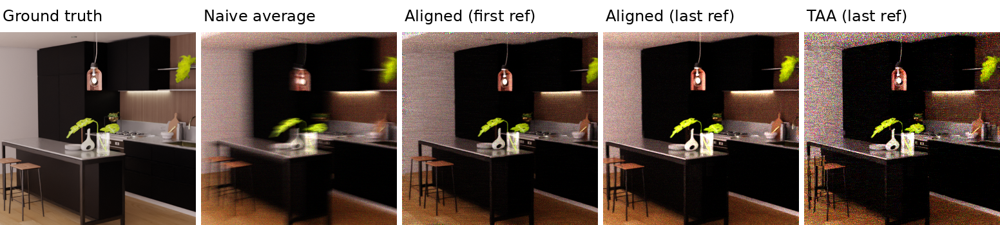

Temporal Anti-Aliasing for Single-Photon Reconstruction
University of Wisconsin–Madison
CS 566: Introduction to Computer Vision, Course Project
Proposal submitted September 29, 2026 · Mid-term report submitted October 29, 2026
Abstract
Single-photon avalanche diode (SPAD) cameras capture high-speed bursts of binary frames, where each pixel records only whether a photon arrived during a given exposure. A single frame carries almost no usable signal; a clean image only emerges from aligning and merging an entire burst (quanta burst photography). This project investigates single-photon image reconstruction under motion, specifically whether history-rejection heuristics from real-time temporal anti-aliasing (TAA), namely neighborhood clamping and motion-adaptive blending, improve classical align-and-merge reconstruction, particularly under fast motion and disocclusion. We evaluate on the Single Photon Challenge benchmark, co-organized by Prof. Gupta's lab, comparing a TAA-augmented pipeline against naive-averaging and hierarchical block-alignment baselines.
Introduction
Single-photon avalanche diode (SPAD) cameras capture high-speed bursts of binary frames, where each pixel records only whether a photon arrived during a given exposure. A single frame carries almost no usable signal; a clean image only emerges from aligning and merging an entire burst, a process known as quanta burst photography. We address single-photon image reconstruction under motion: specifically, whether history-rejection heuristics from real-time temporal anti-aliasing (TAA), namely neighborhood clamping and motion-adaptive blending, improve classical align-and-merge reconstruction, especially under fast motion and disocclusion.
The standard SPAD reconstruction pipeline (estimate motion, align, merge) is structurally identical to temporal anti-aliasing in real-time rendering, yet this connection does not appear to have been explored in prior work. Bringing history-rejection techniques developed for real-time graphics into photon-level reconstruction offers a genuinely cross-domain angle with a clear, testable hypothesis. SPAD arrays are also an emerging sensor technology (megapixel-scale arrays now exist), which makes the underlying reconstruction problem increasingly practical to study.
The project builds directly on Prof. Gupta's own quanta burst photography research and the Single Photon Challenge benchmark his lab co-organized, giving the team a public dataset with ground truth rather than requiring custom data collection.
Approach
Our approach proceeds in four stages:
- Implement a baseline: naive frame averaging, followed by hierarchical block alignment and merging (a simplified quanta burst photography pipeline).
- Implement a TAA-augmented pipeline using the same alignment and merge backbone, adding neighborhood-clamping history rejection, motion-adaptive blend weights, and a per-pixel confidence map.
- Evaluate both pipelines on held-out Single Photon Challenge training scenes and on synthetic motion sweeps generated with the visionsim simulator.
- Analyze where and why each method breaks down under fast motion and disocclusion.
Figure 1 illustrates the per-frame mechanism of the TAA-augmented pipeline and the point at which the naive-averaging baseline diverges from it. This approach draws on course material including image alignment and transformations, RANSAC, optical flow, tracking, and the quanta computational imaging lecture.
Data
The Single Photon Challenge dataset provides 50 simulated training scenes and 5 test scenes (ground truth withheld), each burst (a “photon cube”) consisting of 1,024 binary frames. The full set is approximately 425 GB; we will work with a 10-scene shared subset (about 5 GB; the average scene archive is about 2.7 GB, not the 8.5 GB stated in the proposal), supplemented with our own synthetic motion sweeps generated via the MIT-licensed visionsim simulator.
Evaluation Plan
We will report PSNR and SSIM on held-out training scenes, and conduct a failure analysis against motion speed using visionsim sweeps to characterize when temporal reconstruction breaks down. The contribution is framed as an interpretable classical method with a rigorous failure analysis, rather than a state-of-the-art claim against neural approaches.
Timeline
| Week | Dates | Milestone |
|---|---|---|
| 1–2 | Sep 29 – Oct 12 | Data pipeline (subset download, visionsim setup) and baseline (naive averaging + block alignment) working |
| 3–4 | Oct 13 – Oct 26 | TAA-augmented pipeline implemented (clamping, adaptive blending, confidence map) |
| 5 | Oct 27 – Oct 29 | Mid-term report: baseline vs. TAA results so far, difficulties encountered |
| 6–8 | Oct 30 – Nov 19 | Motion-speed sweeps via visionsim, failure analysis, iteration |
| 9 | Nov 20 – Nov 30 | Final evaluation, ablations (which TAA tricks help most), results polish |
| 10 | Dec 1 – Dec 10 | Presentation and final webpage |
Scope and Feasibility
This project topic was discussed with Prof. Gupta, who confirmed it is a reasonable and worthwhile direction to propose. As is expected at this stage, the specific scope may be refined as implementation progresses and initial results clarify what is achievable within the semester. Prof. Gupta also offered to connect the team with members of his lab for data access or implementation guidance if needed.
Project Updates
Mid-Term Report (Oct 29, 2026)
Both pipeline stages now run on real Single Photon Challenge data, and an evaluation harness reports PSNR and SSIM. Two early findings shape the rest of the project: the scene moves inside a single burst, and the ground truth is at the pose of the last frames. The numbers are in the Results section below.
Download the mid-term report (PDF)
Progress
Data and infrastructure. A loader reads the 1,024-frame bit-packed bursts with frame and crop selection, so a 2 GB cube never has to be unpacked in full. A 1 MB sample is committed to the repository and a 10-scene slice (about 5 GB) is shared with the team. The full set stays on a private NAS for the final runs.
Alignment. Coarse-to-fine 8×8 block matching on a three-level pyramid, applied to group means (64 frames per group). Every method shares this aligner, so differences between methods come from the merge stage.
History validation (TAA). The warped history is clamped to the 3×3 neighborhood range of the incoming group and merged as a weighted mean, discounted by a confidence that falls with neighborhood disagreement and with displacement. Switching both components off recovers the aligned baseline.
Evaluation. evaluate(reconstruction, ground_truth) returns mean per-channel PSNR and SSIM. A harness runs naive, aligned and TAA pipelines (and plug-in pipelines) on a list of bursts and writes a results table and comparison figures. The full test suite of 48 tests passes.
Findings
The scene moves inside a single burst. Phase correlation between 256-frame windows shows a mostly horizontal drift of about 9, 20 and 2 px across the three bursts we measured, so alignment has to work on groups of frames rather than single binary frames.
The ground truth is at the pose of the last frames. Aligning to the first group is 2.2 to 2.9 dB worse than naive averaging, while aligning to the last group is 2.5 to 4.4 dB better. Our first TAA configuration is 1.0 to 3.8 dB worse than plain alignment, because its displacement-based confidence discards correct frames once the motion has been compensated.
Difficulties
- Reference frame. A fixed first-group reference, the natural default, makes alignment look harmful. We found this only after comparing against the ground truth at several time offsets.
- Intensity mismatch. The ground truth is much brighter than the photon average. We currently use two rules, a per-image gain for the main table and a fixed gain of 2.7 in the harness, and one rule has to be chosen and applied everywhere.
- Noise versus motion. Single binary frames cannot be aligned, and photon noise in flat regions produces apparent motion, which makes displacement an unreliable proxy for alignment error.
- TAA tuning. Once alignment has compensated for the motion, the displacement term in our confidence discards correct frames and raises noise.
Changes to the proposal
- Alignment unit. Alignment runs within a burst, on groups of frames, with the last group as reference.
- Motion sweeps. Real bursts already span roughly 2 to 20 px of motion, so the visionsim sweeps become optional and the motion study uses real bursts binned by measured speed.
- Data size. The average archive is about 2.7 GB (133 GB compressed in total), not 8.5 GB as proposed.
- Hypothesis. The initial TAA result is negative: when alignment is accurate, displacement-based rejection hurts. We now plan a confidence based on alignment residual and will report the failure analysis either way.
Next steps
Unify the intensity rule, switch the baselines and TAA to the last-group reference, and rerun the harness on full bursts and a motion-binned scene set. Replace the displacement term with a residual-based confidence, run ablations (clamp, blend, confidence) and a failure analysis against motion speed. Experiments freeze on Nov 30.
Results
Scene kitchen1, bursts 0, 1 and 10, a 300×304 central crop, all 1,024 frames, groups of 64. Each reconstruction is multiplied by one least-squares gain before PSNR, because the ground truth is much brighter than the photon average. This rule is preliminary, and the results come from one scene with no held-out data, so they are indicative, not a benchmark.

kitchen1. Naive averaging blurs the moving scene. Aligning to the first group is sharp but offset from the ground truth. Aligning to the last group matches it, with visible photon noise. Default TAA (also last-group reference) is noisier still.| PSNR (dB) | Burst 0 | Burst 1 | Burst 10 |
|---|---|---|---|
| Naive average | 16.2 | 14.7 | 16.8 |
| Aligned, first-group reference | 14.0 | 12.5 | 13.9 |
| Aligned, last-group reference | 19.7 | 19.1 | 19.3 |
| Clamp only, last-group reference | 19.7 | 18.5 | 19.3 |
| TAA (default), last-group reference | 17.3 | 15.3 | 18.3 |
The evaluation harness gives SSIM as well. On the two committed samples (256 frames, 128×128 crop, fixed gain 2.7, first-group reference), aligned averaging and TAA do not beat naive averaging, which agrees with the first-group result above. These numbers are not comparable with the table above, because the crop, number of frames, reference group and intensity rule all differ.
| Harness (dB / SSIM) | B0 PSNR | B0 SSIM | B1 PSNR | B1 SSIM |
|---|---|---|---|---|
| Naive average | 11.93 | 0.159 | 9.78 | 0.140 |
| Aligned (first ref.) | 11.86 | 0.150 | 9.52 | 0.134 |
| TAA (first ref.) | 11.86 | 0.148 | 9.52 | 0.128 |
Still to come: held-out scenes and the PSNR / SSIM versus motion speed sweep (planned for Weeks 6–8).
Discussion
Preliminary reading: when alignment is accurate, displacement-based history rejection hurts rather than helps. The full failure analysis across motion speed has not yet been run, and this section will be completed after it.
Final Presentation
The 5-minute presentation video will be embedded here (presentation on December 8, 2026). Not yet developed.
Questions and answers
Anticipated questions and our answers will be listed here, under the video. Not yet developed.
Code
Source code: GitHub repository
Downloadable scripts and executables are available in the repository's src/ directory.